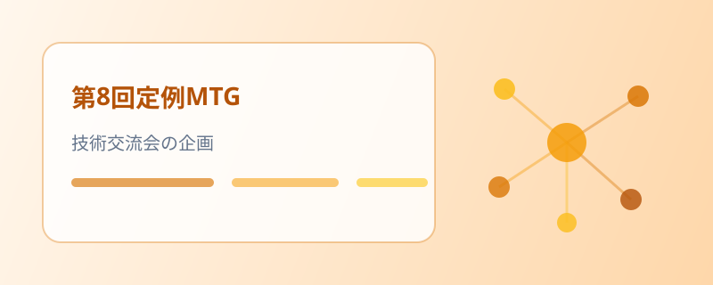

第8回定例MTG — 技術交流会の企画と新規事業の設計
前回の振り返りに続き、柱 A・B・C の進捗を共有。営業各領域の進捗、エンジニア同士の技術交流会の企画、新規事業の設計見直しについて協議しました。
会議の概要
ハイライト
- 柱 A — プロパー・パートナー・SES・受託の各領域で面談や商談が進行（具体数値は社内限定）
- 柱 A — 受託はEC サイト関連の受注で営業利益の黒字着地を見込み（金額は社内限定）
- 柱 B — 学習の向上と悩みのフォローを目的にエンジニア同士の技術交流会を企画
- 柱 C — SES マッチングアプリは設計見直しの段階。営業・機能の両面で準備を進行
柱 A — 営業各領域の進捗
柱 A では、6月の着地と今後の見通し（具体数値は社内限定）に加え、各営業領域の動きを共有しました。
- プロパーでは複数の面談が進行し、一部の案件が決定
- パートナー・SESでは既存取引先へのアプローチと新規開拓が進み、交流会で繋がった企業との商談も設定
- 受託は EC サイト関連の受注により、営業利益の黒字着地が見込める状況（金額は社内限定）
柱 B — 技術交流会の企画
柱 B では、担当領域を「学習の向上／面談力の強化／不安・悩みのフォロー／採用」の4つに整理し、新たな施策を検討しました。
- 面談力の強化は運用方法が決定。今回は学習の向上とフォローアップに向けた施策を検討
- エンジニア同士の技術交流会を企画 — 帰属意識やキャリア意識、コミュニケーション力、勉強意欲の向上を目的に、基本は対面で開催
- 懇親会に合わせて年3回・90分程度を想定し、全社員（大阪メンバー）を対象に。会場や運用の詳細は次回以降に検討
- 参加は業務として扱い、各自の稼働状況にも配慮する方針
柱 C — 新規事業の設計
柱 C では、SES マッチングアプリの設計見直しについて、営業・機能の両面から共有しました。
- 営業サイドでは、インフラ見積もりが完了し、営業スケジュール・資料・ターゲット選定を作成中。営業目線で必要な機能を一覧化
- 機能サイドでは、基本設計を実施して要件を整理。要件から設計への落とし込みを進行中
- フィッシングメール対策（受信のブラックリスト・詳細フィルター）や勤務地条件などの改善点を検討
- 今後はリリース後の担当体制と、社内のセキュリティ対策を入念に準備
このあと
各営業領域の進捗管理、技術交流会の詳細設計、新規事業の設計と体制づくりをそれぞれ進めます。 決まったことは、引き続き本サイトでお伝えします。